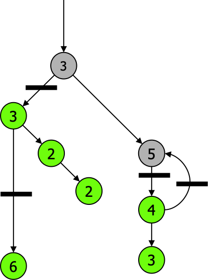

Main Contribution
- Scalable user-level thread package
- Alternative to
- Event-based models
- Kernel-thread models
- Alternative to
- Scalability to 100,000 threads
- Efficient for Internet Servers
Rob von Behren, Jeremy Condit, Feng Zhou, George C. Necula, and Eric Brewer
U.California, Berkeley
SOSP 2003

Q & A